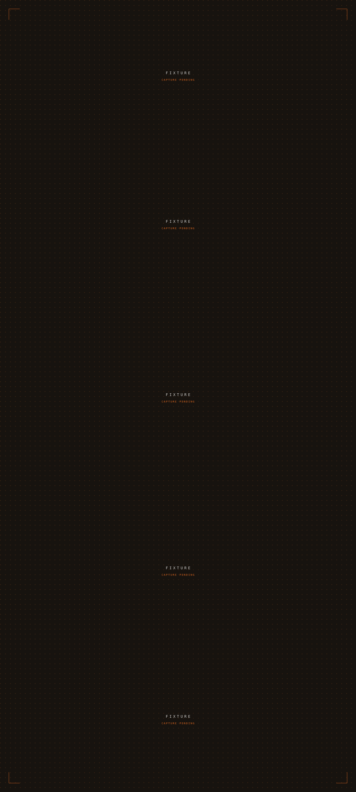

AK·O·—·005
Work · Website / Digital · Founded
Fashion Frontier
OwnerAK Brand Development Studio
RelationshipFounded
TypeWebsite / Digital
CodeAK·O·—·005
Preview

Capture pending · refreshes weekly · the live site opens only on request
The capture is taller than its frame and pans as you scroll — the real page, without loading it. Ten live iframes on one index is not a page anyone can use.